China, but more social.
Come Curious.
Leave Connected.
For those seeking fun and connection in China.
Curio creates colorful, people-first travel experiences — from city nights and festivals to hiking groups, creative camps, food crawls, photography walks and communities built around shared passions.
FUN FIRST
LOCAL FRIENDS
NO BORING TOURS
▶ Curio in motion
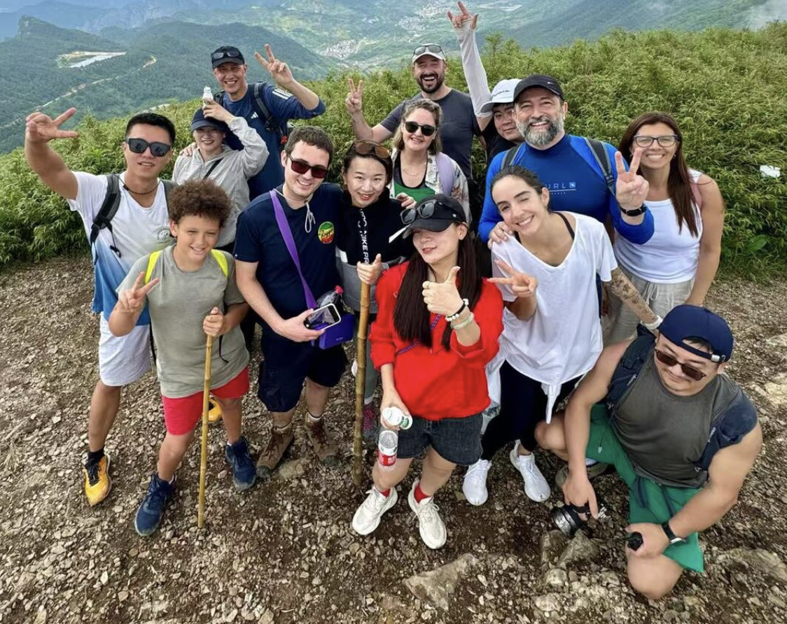
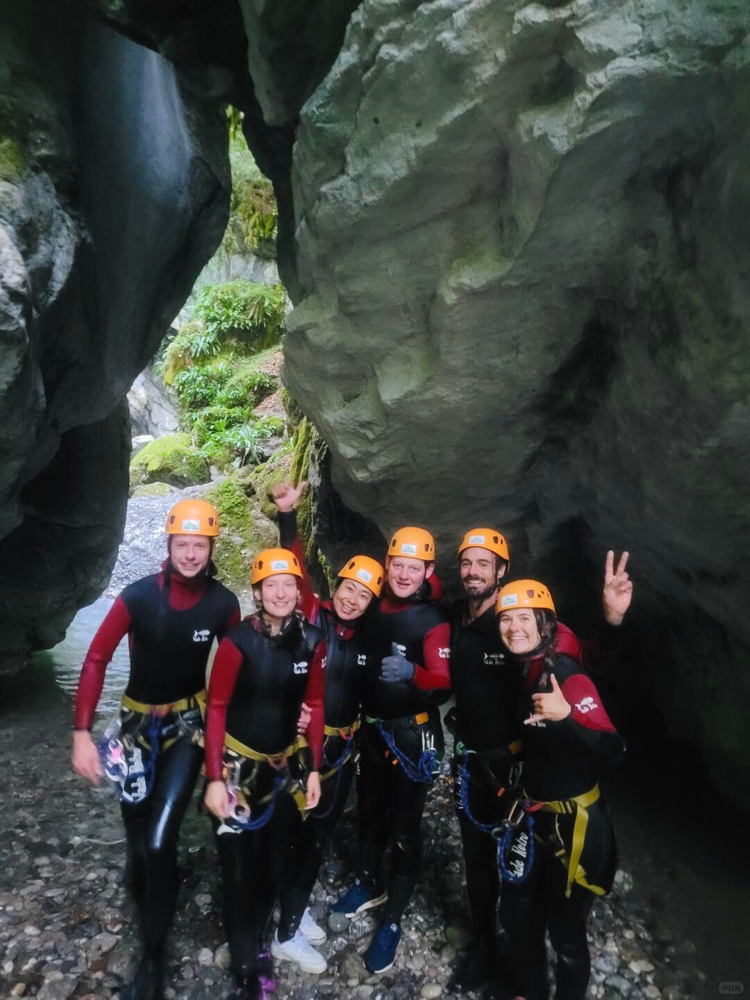
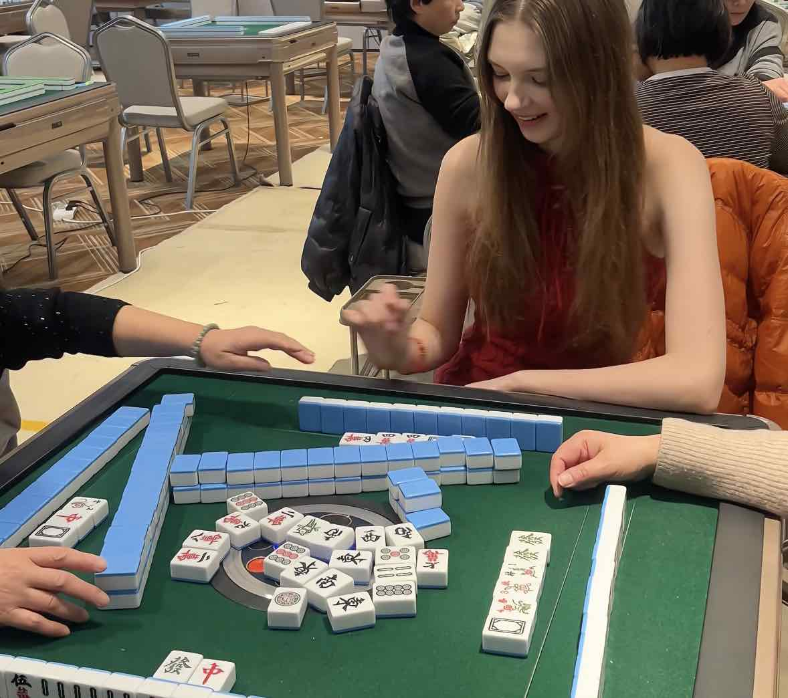
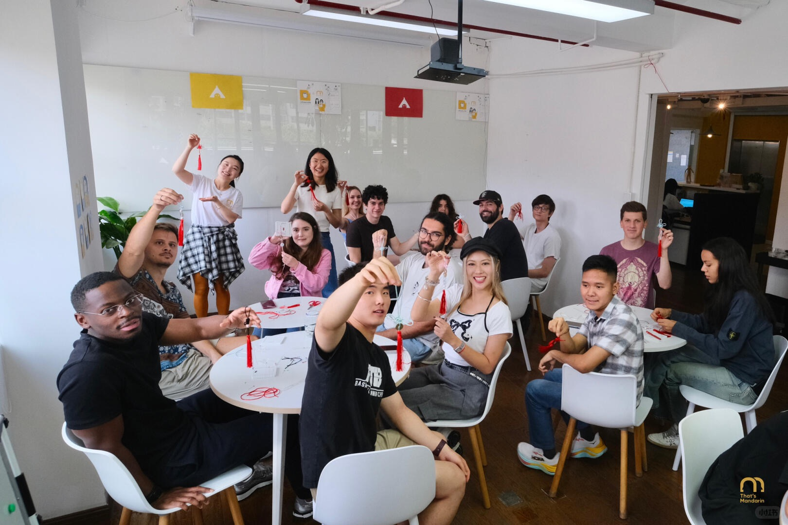
Who We Are
A travel lifestyle brand for curious people.
China has incredible landscapes and history. But sometimes, the memory that stays with you is not a place — it is the people you met, the table you shared, the night you did not plan, or the hobby that suddenly became a doorway into a new community.
Curio is created for travelers who want to express themselves, try something new, and feel part of something while traveling in China.
We do not just help you see China. We help you belong in it.
China Experiences
Not a checklist. A good time.
Meet, move, eat, explore and connect — Curio turns China into shared moments, new friendships and stories you live together.
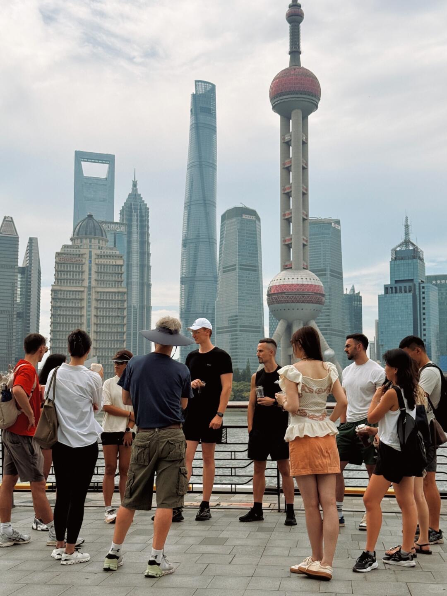
City Discovery
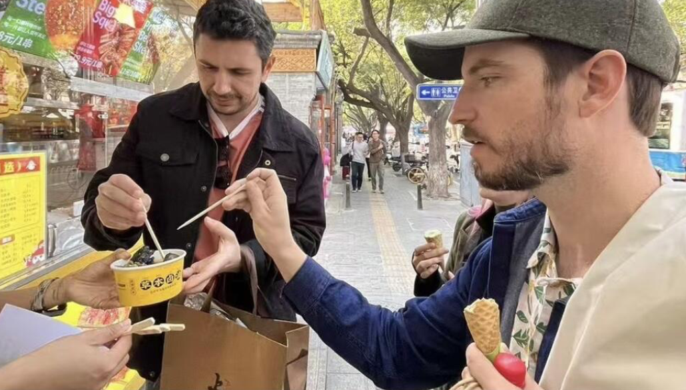
Food Crawls
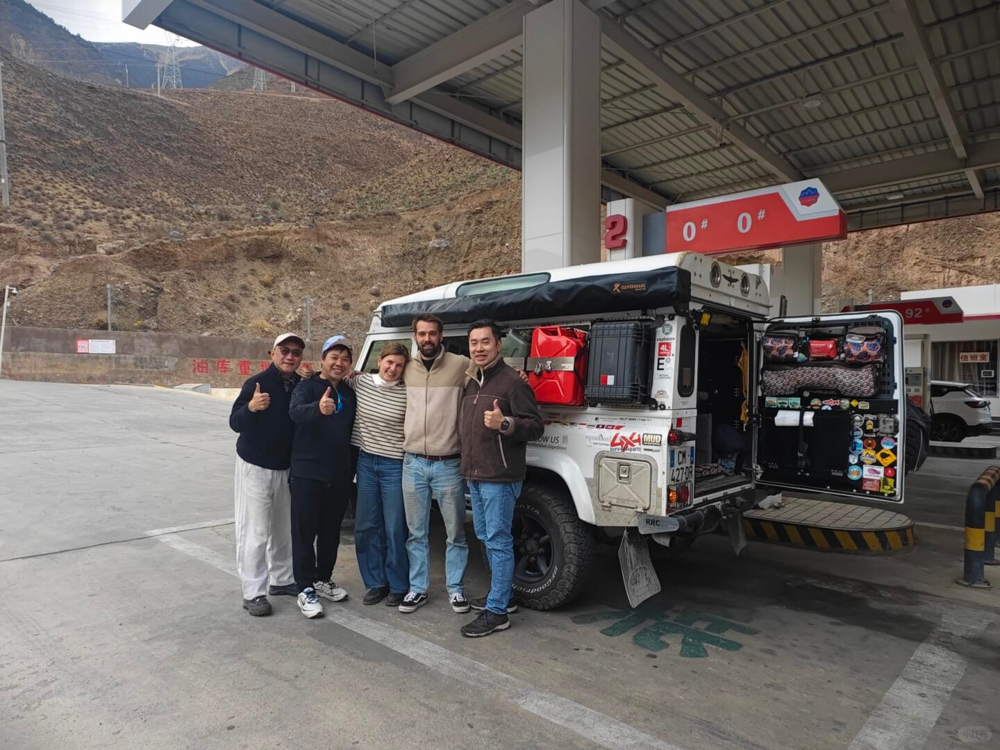
Road Trips
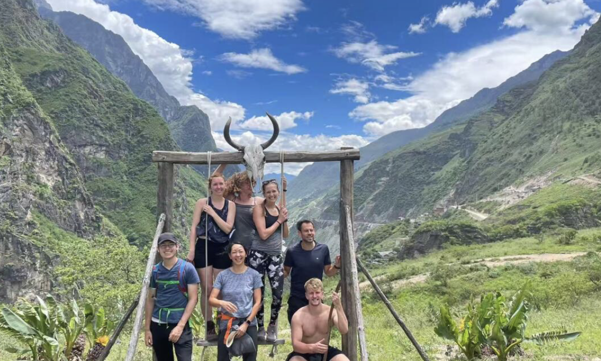
Outdoor Escapes
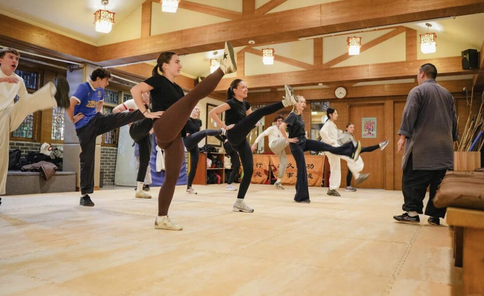
Move & Play
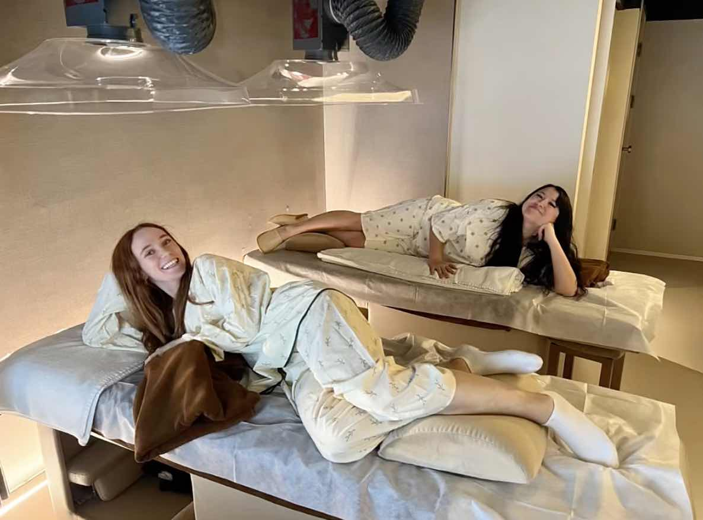
Wellness Circles
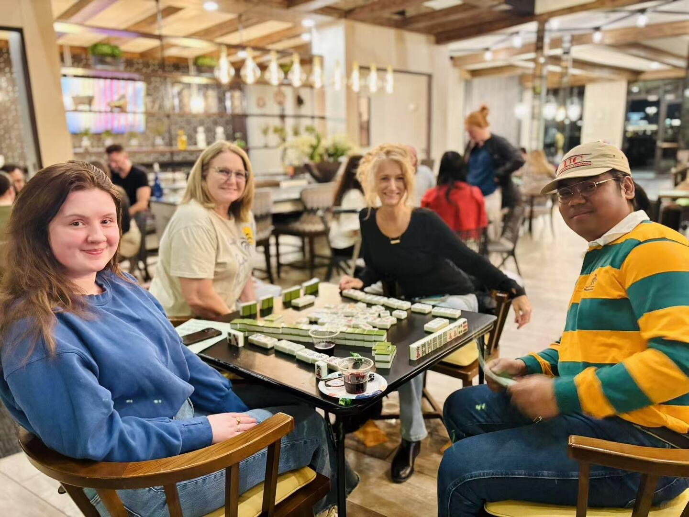
Culture Hangouts
Social Travel Communities
Find your people in China.
Curio is built around communities, identities and shared interests — because the best travel is often the one you do together.
Adventure People
Hiking, camping, trekking, cycling and mountain weekends.
Creative People
Street photography, design walks, ceramics, calligraphy and workshops.
Inclusive People
LGBT-friendly social experiences, nightlife and community moments.
Kung Fu & Culture Camp
Learn, train, eat and live around a shared passion.
Wellness People
Yoga, meditation, tea, hot springs and slow reset days.
Language Exchange
Meet locals and other travelers through real conversations.
What We Create & How We Work
You bring the curiosity. We bring the connections.
01
Discover
We understand what kind of fun, pace, people and vibe you are looking for.
02
Match
We connect you with the right cities, communities, hosts and experiences.
03
Create
We design a flexible route with transport, stays, activities and social moments.
04
Connect
You leave with stories, friends, photos and a different relationship with China.
China is more fun together.
Start your Curio journey with New Imagination DMC China.
Let’s Create Something Fun